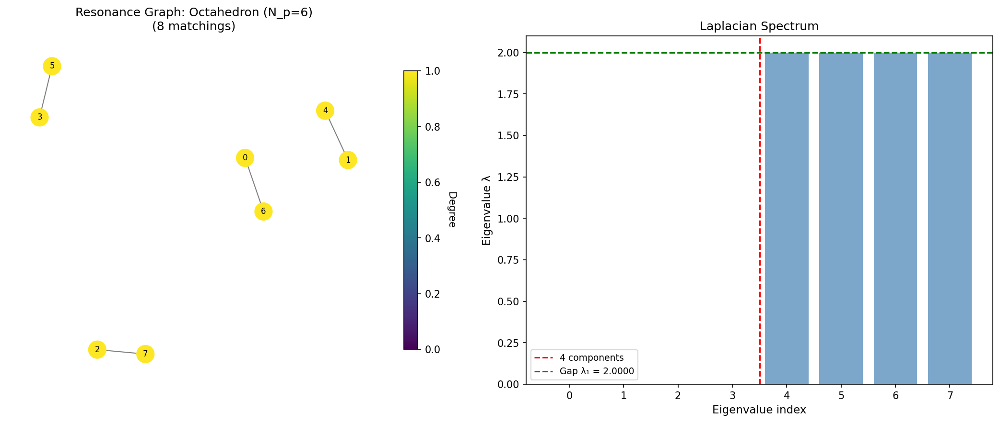
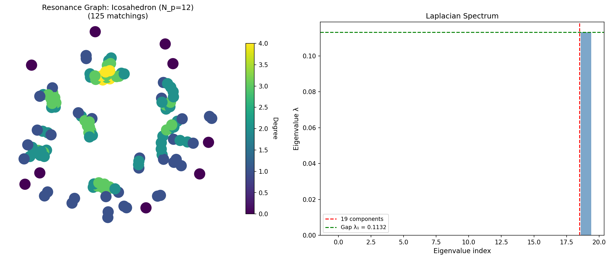
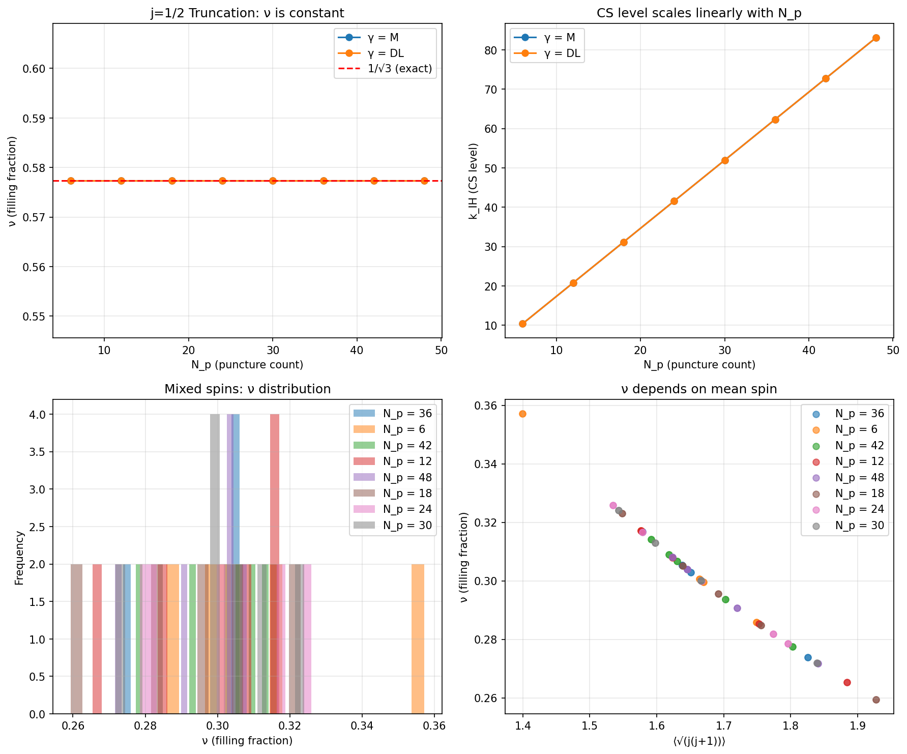
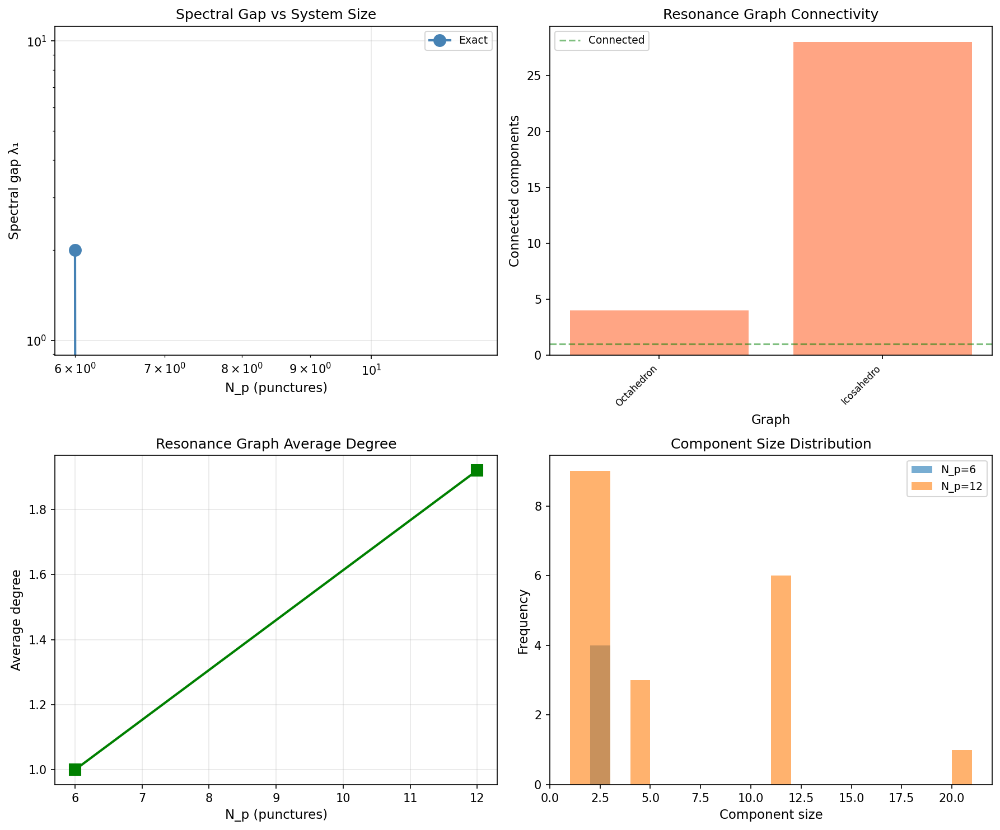

Numerical investigations across six phases of the QHE-BHE correspondence.
Exact enumeration of dimer coverings on Platonic solids (octahedron, icosahedron, dodecahedron). Berry phase and Chern number computation.

Results JSONSubdivided icosahedra (N_p = 42, 72, 132). Finite-size scaling and convergence to continuum limit.

Results JSONTemperature-dependent filling fractions and entropy curves. RVB state thermal behavior.

Results JSONSymmetric orbifold points with exact Chern numbers. Finite-size scaling analysis.

Predictions Results